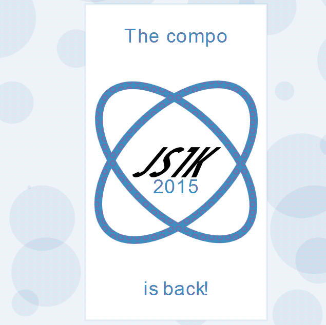
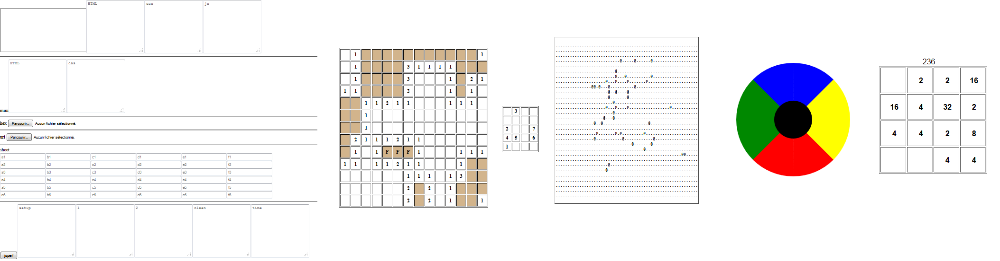
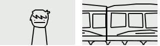
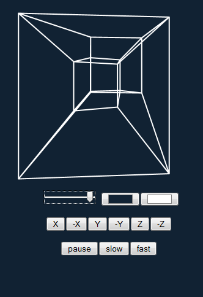

JS1k 2015
february 2015
This month was very busy! I spent almost all my free time working golfing for JS1k.
➾ I contributed to the great invitro made by @subzey, by finding a brand new compression technique, allowing to hash the canvas properties as well as the canvas functions.
You can read more about it in his post mortem and the discussion in this RegPack ticket.
It was very exciting to discover this new technique and save about 50 bytes on a demo we thought we couldn't compress anymore!

➾ I gathered the best code-golfed games and apps made during the past months by "the codegolf team" into three compilations:
- Mini Apps Collection
Featuring 7 apps! Mini Code Editor, HTML & CSS minifier, hex viewer, dataURI converter, spritesheet and JSPerf.
(1477b minified, 1024b regpacked)
- Mini Games Collection #1
Mine Sweeper, Pop Tiles, and Game of Life.
(1221b minified, 1023b regpacked)
- Mini Games Collection #2
Simon with sound and 2048.
(1220b minified, 1022b regpacked)
It took a lot of time to fit each of these compilations in 1k, which involved removing some features not compatible with js1k's rules (like accessing "top" and localStorage"), managing to inject big chunks of HTML and JS into the shim with many "document.write", "innerHTML" and "outerHTML"-based hacks, and optimizing the whole code for a better RegPack compression (by repeating code as much as possible, sometimes in very silly ways)...
Thanks to @p01, @subzey, @aemkei, @LauckAndLoad, @bburky, @mathias and @veubeke for their contribution in each of these projects!
You can read more about these apps and games (and their original projects) by clicking the "demo details" button on each demo.

➾The theme was "Hype Train", so I couldn't resist making this little hommage to asdfmovie's sequence I like trains. The code has nothing special, just a lot of points coordinates and a loop displaying them with moveTo and lineTo's. This kind of "monotonous" source code packs very well (1472b minified - 902b regpacked)

➾ The biggest challenge was of course my "serious" entry, hypeRcube!
With all the success of the 3D demos during the past years, my idea was to produce the first 4D demo of JS1k, featuring an "hypercube" (the 4D equivalent of a 3D cube). I had no precise idea of what I would (or could) do in 1k, but I aimed for some kind of animated / rotating hypercube, like the ones we can see on wikipedia's gifs.
It took more than 10 iterations (10 more or less big rewrites) to become what it is today, and each of these rewrites was marked by a new exciting feature, a compression breakthrough, or a funny bug that made me understand that I was not on the good path. You can tke a look at these beta versions here:
• Proof of concept, very laggy but featuring an intro, perspective, camera rotation and the 6 4D rotations (3.1kb minified, and only 1.3kb regpacked, due to heavy code reuse). This PoC convinced me that doing a 4D demo for js1k was possible! (tweet)
• Beta #1, with more reactive buttons, and intensive golfing (2.0kb minified, 1.1kb regpacked)
• Beta #2, almost fitting in 1k (1.9kb minified, 1037b regpacked)
• Beta #3, golfed intensively (1.6kb minified, 963b regpacked). From this point I knew that I would be able to add many more features and graphical enhancements in my 1kb demo!
Actually, I added features and golfed them at the same time to stay as close as possible to 1kb.
• Beta #4, adding colors, and allowing to play/pause animations... but it's so slow ! (1.5B minified, 1022b regpacked) - funny... bugs.
• Beta #5, enhancing speed and adding a perspective slider going from an isometric view (2.5D) to an exaggerated 3D view... (1.5kb minified, 1030b regpacked)
• Beta #6, adding two color pickers and optimizing the workflow for RegPack (reusing the vars produced by RegPack and putting all the code in a string that will execute itself repeatedly using a timeout (1.58kb minified, 1042b regpacked) - the main achievement here was to achieve drawing the hypercube in a single pass, using only connected edges and not passing more than one time by the same edge, thanks to this wonderful crazy path I've drawn on paint (other funny bug)
• Beta #7, YAY EPILEPTIC PARTY! very buggy but I find it artistic. (see gif)
• Beta #8, stabilized and golfed a bit more (1.56kb minified, 974b regpacked)
• Beta #9, I tried to fill the hypercube in red but it was a bad idea. (related tweet)
• Beta #10 finished, with an extra feature to slow down or speed up the animation (1.57kb minified, 1021b regpacked)
Making this demo helped me understand better the 4th dimension, and even if I only scratched the surface, I find it amazing. I was surprised to see so many features and graphic effects fit in 1kb, thanks to many epic golfing tricks, but also hand-made line-drawing (see demo #6), as well as dirty hacks to optimize the code for RegPack (repeating big chunks as much as possible to reduce entropy), and faking the perspective effect by just drawing lines on a canvas and making the points closer to each other to give the impression that they are further from the camera...
To achieve so many things, the secret holds in two words: passion and organization. If you want to see how organized it is, you can read the source code below. I detailed it as much as I could to make it useful for anyone wanting to discover the tricks used inside.
Thanks for your attention and see you next year!

Source code
Commented (5735b)
Minified (1550b)
Packed (1024b)
In case you were wondering, yeah, I used almost all the alphabet as variable names. This demo contains a big state machine needing all those variables. And yes, it's a heart at the end of the RegPacked code, because I had 3 bytes left and "eval(_) <3" is totally valid. It's useless but it's my way to say that the demo was made with love! :D
Cheers,
Xem
PS: please retweet if you liked it!